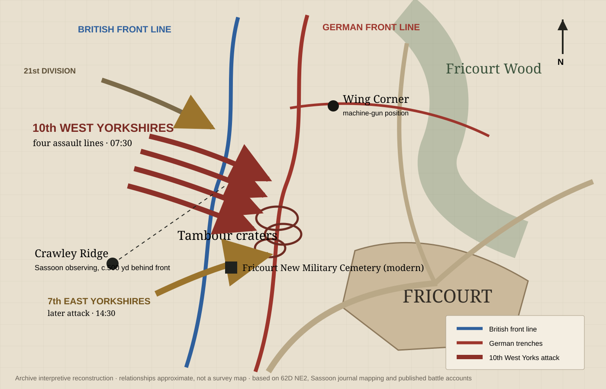
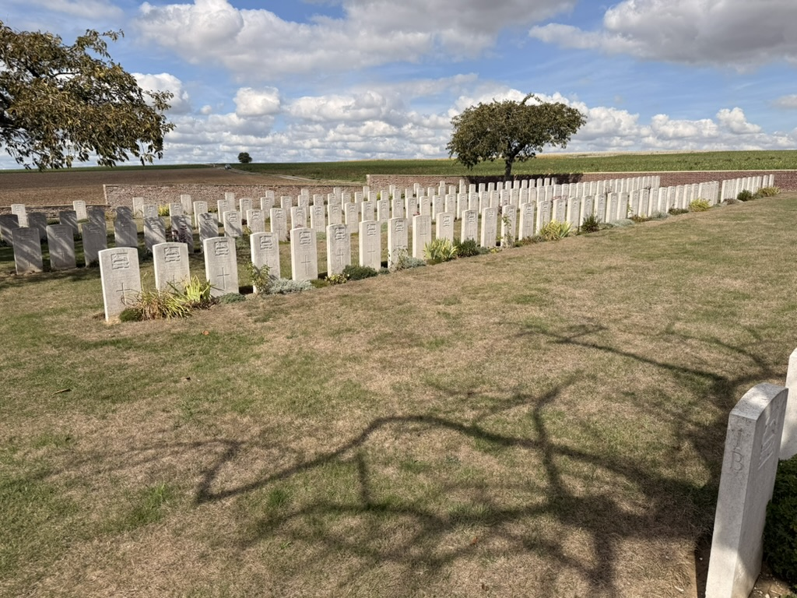
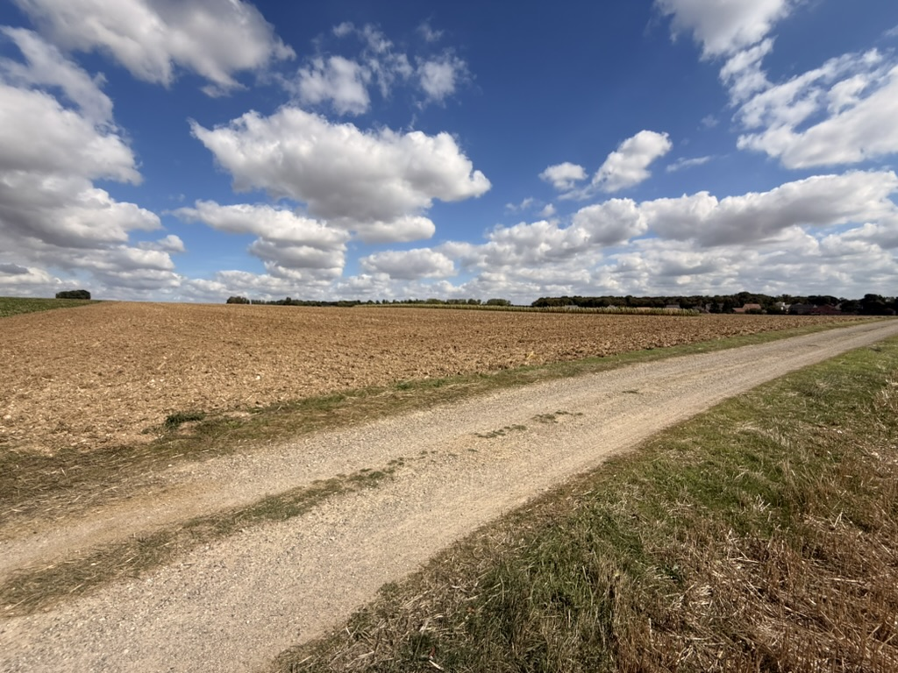

From the whole Somme front to the few hundred yards around the Tambour: maps place Ernest Harmson’s battalion back onto the ground of 1 July 1916.
This archive reconstruction combines the battalion account with contemporary trench mapping and Siegfried Sassoon’s eyewitness geography. It is designed to explain relationships on the battlefield, not to claim metre-level positions.

Use the public-domain British attack plan to place Fricourt between La Boisselle and Mametz and understand the wider Fourth Army offensive.
The key trench-map sheet covers Fricourt and Mametz. Surviving editions plot German trenches, machine-gun positions and mine craters; Cambridge holds a version corrected to 15 June 1916.
The archive reconstruction narrows to the ground crossed by the 10th West Yorkshires: British line, craters, German line, enfilading positions and Sassoon’s observation point.
Australian War Memorial copy, 1:10,000, corrected to 7 September 1915. It records enemy trenches, machine-gun positions and mine craters around Fricourt and Mametz.
Cambridge University Library identifies this trench map as showing the sector occupied by Sassoon’s battalion on the first day of the Somme, including Sandown Avenue, Kingston Road and Fricourt.
A useful whole-front view showing the British and French front, German lines, divisional sectors and first-day objectives. Fricourt sits in the XV Corps sector.
A period map published in the Times History of the War, useful for the relationship between Fricourt, Contalmaison and the surrounding ridges.

Battlefield interpretation map photographed during the family visit. It shows the 10th West Yorkshires, neighbouring units and attack directions over the modern ground.
Siegfried Sassoon drew a plan of the Fricourt sector in the journal he kept between 26 June and 12 August 1916.
Cambridge records the map on folio 2r of manuscript MS Add. 9852/1/7. It shows German trenches and the cemetery. Their analysis places Sassoon near the bottom of the map, roughly 500 yards behind the British front line on Crawley Ridge.
The same analysis identifies Wing Corner at the top centre and links the troops Sassoon watched advancing on his left to the 10th West Yorkshires.

The Fricourt landscape today. The archive uses modern family photographs alongside period mapping rather than treating the battlefield as an abstract diagram.
{kind=link}
{kind=link}